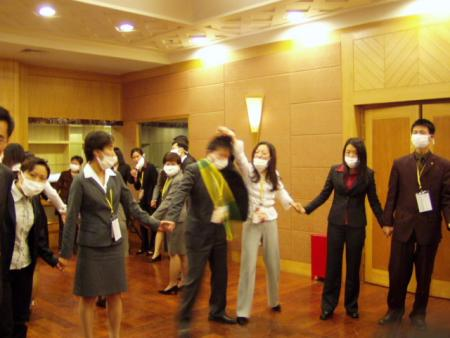
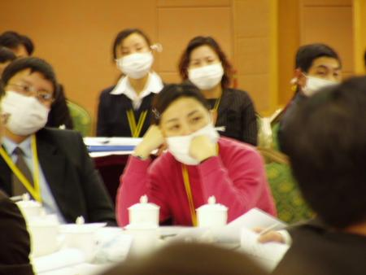

转载自一片遮风挡雨的绿叶
四月是动人的季节，在黯淡的黄昏，或者是寂静的黑夜，读到自己喜爱的日本作家的文字。空气是透明的蓝，带着蔷薇花香，细微的淡金色的灰尘在阳光里飞舞。但是我没有去过日本，只从小说与文字中读到一些名词，比如横滨，大坂，美丽的樱花，淡粉色，松软湿润的泥土，似乎还有蚯蚓爬过落叶发出沙沙嘶嘶的声音，充满灵性。
星期天的下午，阳光从淡绿色窗纱外透射进来，因为SARS你不能在这样一个明媚的下午出门,怅然。
徒然四壁雪白的墙，洗衣机发出嗡嗡的旋转声。柔软的羽绒沙发垫子，象某人柔暖滑润的肌肤，指间的烟草味，如同每一段时光流逝的记忆，带着淡淡的茉莉花香。或者象毛皮，洁净曲卷的灰白发丝，象西伯里亚出产的银狐的尾巴，灰色的枪毛中带点银白色，异常名贵。
她说亲爱的，你有没有发烧。
微笑。
SARS，高烧四十度。
你在干什么，有没有想我，不要让我担心，诸如此类云云。
又或者，什么？两小时回家？IS COFFE？卡布奇诺？
SUCH AS I WANT YOU，MISS YOU，LOVE YOU SO MUCH
SARS究竟是什么样的病毒我不知道。或者衣原体细菌蠕虫，一段蛋白质，多肽链，螺旋状或者圆弧形？原谅我读书时代不够用功，细胞生物学微生物或者遗传学，免疫学染色体与变异等等。教微生物学的教授是位漂亮的女士，善良中透出冷漠,到学期末方知道考试难过叫苦连天。伊讲病毒瞬间万变繁殖变异，以我们想象不到的速度，以致在新病毒出现的时候我们丝毫没有抵抗力。
道高一尺魔高一丈。
最新的变异，瞬间流传，侵入四月的宁静。
四月的黄昏，我独自坐在自家的窗口下，读一本日本作家的散文集。
从13楼的高层俯瞰这个城市有一种繁华而流动的美丽。
美国攻打伊拉克的战争尾声，电视里，市长平和而委婉的宣布SARS最新疫情。
这个明媚温婉的下午，我为SARS烦恼。
我爱上了一个人。可是因为SARS流行，她被困在城市的另一边。
《心中的石头》三郎辉辉
有人比喻:SARS是其心中的一块石头!
早晨一到公司,桌子上就有一堆所谓能够治疗的中药包,呵,有些人心中的石头终于可以落地了.
其实,就是这样的一包包精神安慰剂就能够预防吗?
答案肯定是不确定的.
今天下午又要外出了,一月一次EMBA课程,可能到忙到周日晚上才能再次上来,很遗憾!
看看我们最近一次培训的现场.


《爱在瘟疫蔓延时》作者：格雷
“爱在瘟疫蔓延时”，一首老歌的歌名，出自达明一派，近日频频想起，无从摆脱。
曾经很难想象，生活在瘟疫中是什么感受，感谢非典型肺炎，让我们切身体会。昨天坐车穿过广州的街头，发现大排档还是很火爆，夜总会门口的汽车还不少，朋友打电话来说正在某处通宵喝酒，自己上周还去卡拉一把OK，但每个人娱乐之中的话题，却仍是非典型，只是相比于二月，多了一些调侃和轻松，多了一些及时享乐的不怕死精神。
在传媒的作用下，广州仍然在强调歌舞升平，于是真的大家就继续歌舞，在不断安慰自己中快乐地活着。有一个朋友打电话通知已经在得完非典型肺炎后出院，我的第一反应不是恐惧，而是放心，至少有一个和自己年龄生活方式都差不多的人能活过来，在瘟疫早已肯定蔓延的前提下，有朋友能活下来是最确凿的放心。
原来在瘟疫中是这样生活的，我对自己说。所有的可怖，包括无特效药，无疫苗，查不清来历，增加的人数，都只是加强了瘟疫的荒谬性而不是绝望感。之所以绝望不起来，是因为繁忙的工作和生活令自己无暇细细品味恐惧。瘟疫令生活被虚置，同时工作的紧张又使心情虚幻不起来，于是工作比生活更真实，就象在高速公路急驰的汽车，永远在车祸的随时威胁下飞奔不止。
最无助和惊惶的是二月，三月份已经嬉笑不已，而当四月时，我们赫然发现，广州已成为世界关注的中心，这可能是广州建城2000多年来的第一次。既然伊拉克是战争的中心，美国是强权的中心，那广州是非典型肺炎的中心又何妨呢？
有一部讲传染病的电影名叫《极度惊慌》，以我的切身体验来看，广州，在传媒、人心非常错综复杂的作用下，属于“非典型惊慌”。